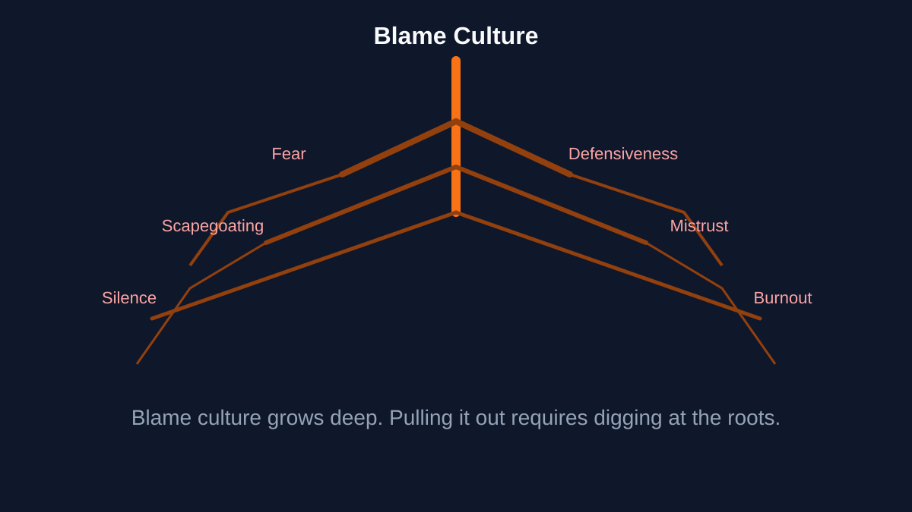
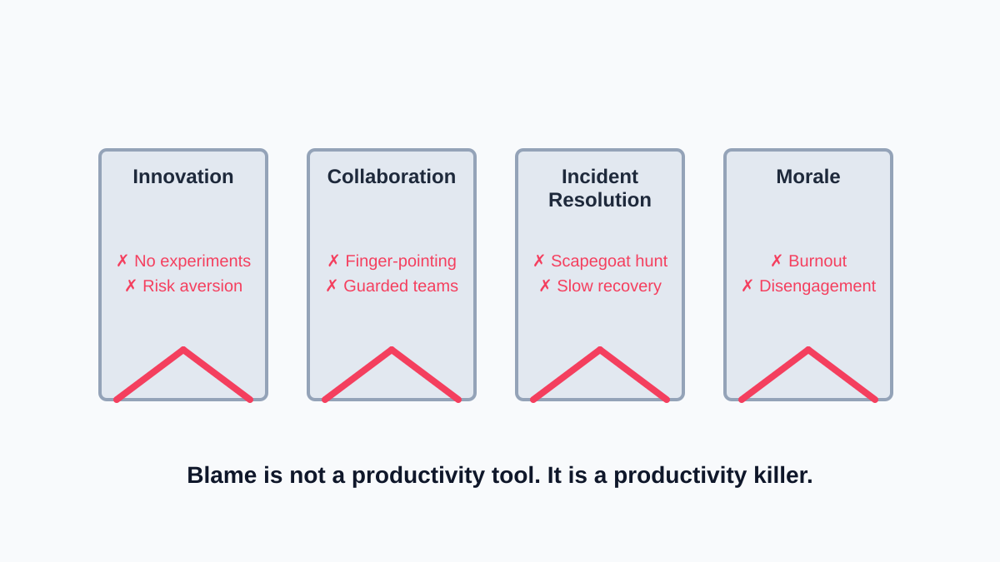
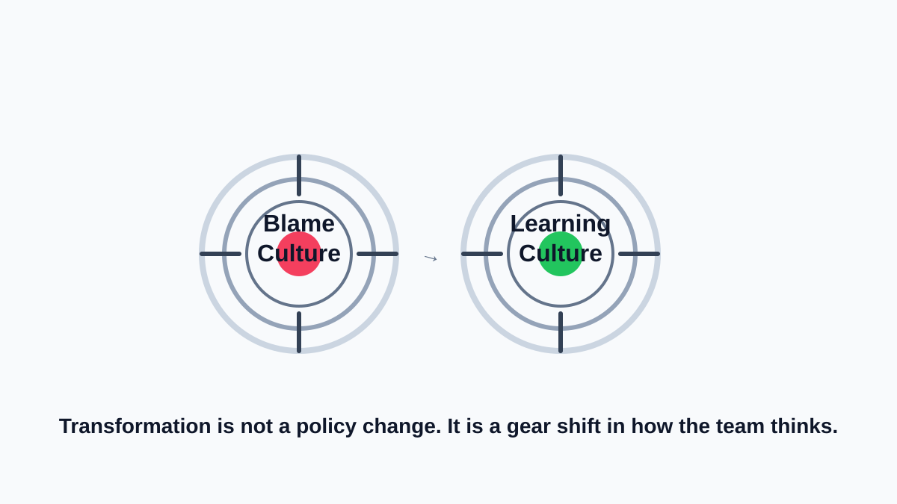
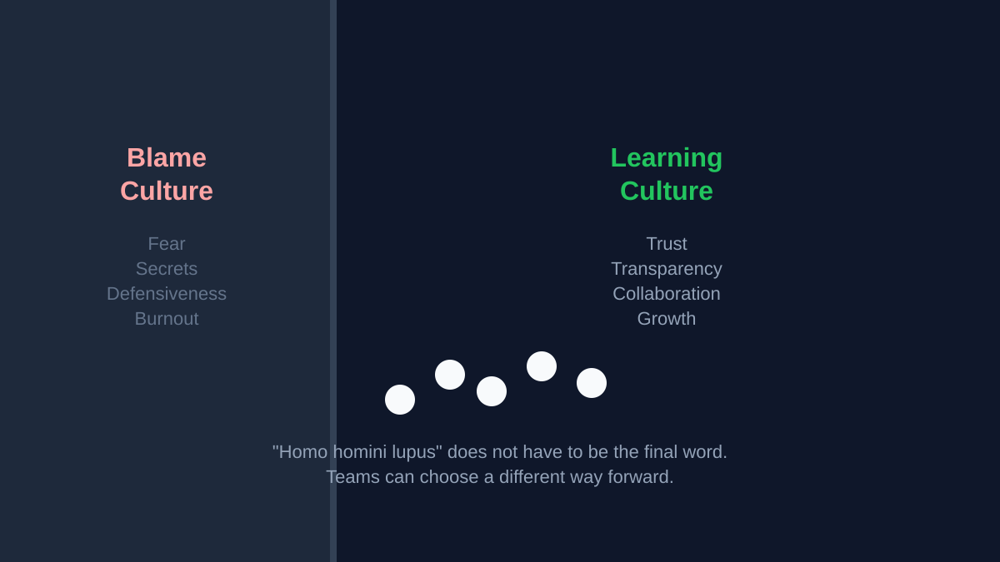

Part 4 of the DevOps Dirty Dozen Series: Homo homini lupus — man is a wolf to man.
Insight: Reflects the destructive nature of blame within teams.
DevOps is supposed to create an atmosphere of learning from mistakes, free from finger-pointing and blame. After all, the promise of automation removes the blame on individuals. If something went wrong, the process and automation has a gap, and the team must work together to close it.
Collaboration, accountability, and trust are the lifeblood of DevOps. Yet, when things go wrong, it is easy to fall into the blame trap. Blame culture arises when failure prompts finger-pointing rather than problem-solving, stalling progress and poisoning team dynamics.
In this fourth article of the DevOps Dirty Dozen, we delve into DevOps blame culture — its origin, its cost, and recommendations to focus on improvement, learning, collaboration, and innovation.
Originally published on LinkedIn.

Blame culture grows deep. Pulling it out requires digging at the roots.
The Anatomy Of Blame Culture
Blame culture does not manifest overnight. It creeps in subtly, often unnoticed, until it becomes ingrained in an organization’s DNA. Here is what it looks like in practice:
- Fear-Based Leadership: Leaders focus on assigning fault during failures, fostering fear of reprimand over constructive feedback. This stifles open communication and learning.
- Silos of Defensiveness: Teams retreat into protective bubbles, reluctant to share progress or risks for fear of being blamed. Instead of collaboration, competition and mistrust thrive.
- Reactive Crisis Management: When incidents occur, the first instinct is to hunt for scapegoats rather than solutions. Time is wasted debating fault while the real issue lingers unresolved.
- Performance-Over-Process Focus: Teams are evaluated based on individual performance, making them more inclined to deflect responsibility to avoid being labeled as “the problem.”
- Blameless in Words, Not Actions: Organizations may say they support blameless postmortems, but when actions do not align, a blame culture persists under the surface.
At its core, blame culture is a symptom of broken systems and poor leadership. By recognizing its anatomy, organizations can begin dismantling its foundations.

Blame is not a productivity tool. It is a productivity killer.
The Cost Of Blame Culture
Blame culture is not just a minor inconvenience. It is a productivity killer that eats away at innovation, collaboration, and morale. The ripple effects can impact everything from team dynamics to customer satisfaction.
- Stifles Innovation: Fear of failure discourages experimentation and creativity.
- Breaks Collaboration: Finger-pointing fosters hostility and fractures team unity.
- Slows Incident Resolution: Energy is spent assigning fault rather than addressing root causes.
- Reduces Morale: Persistent blame culture leads to burnout and disengagement.
Real-World Example: A retail company struggling with frequent outages conducted punitive postmortems, leading to mistrust among teams. By shifting to blameless retrospectives and focusing on systemic improvements, they fostered a culture of shared responsibility and drastically reduced incident frequency.
The cost of blame extends beyond the immediate; it hinders growth, breeds distrust, and leaves a trail of missed opportunities. Recognizing these consequences is the first step toward building a healthier, more collaborative culture.

The cycle repeats until someone chooses to break it with trust.
The Origins Of Blame Culture
Blame culture does not materialize out of nowhere. It is often the result of systemic weaknesses and ingrained behaviors that go unaddressed for too long.
- Lack of Psychological Safety: When teams fear retaliation for mistakes, they are less likely to take risks or share honest feedback.
- Overemphasis on Accountability: While accountability is essential, it can morph into blame if not paired with a culture of learning.
- Poor Incident Management: A reactive, punitive approach to incidents fosters mistrust and defensiveness.
- Historical Biases: Legacy behaviors or leadership styles can perpetuate blame cycles.
By identifying where blame culture starts — whether in leadership practices, historical biases, or poor incident management — teams can shift their focus toward creating an environment where trust and accountability thrive.

Transformation is not a policy change. It is a gear shift in how the team thinks.
Transforming Blame Into Growth
Blame does not have to be the end of the story. With intentional action, it can be the spark for transformation, turning finger-pointing into opportunities for learning and collaboration.
- Build Psychological Safety: Foster an environment where mistakes are viewed as opportunities for learning, not punishment.
- Shift the Focus: Replace “Who caused this?” with “What caused this?” and “How can we prevent it?”
- Encourage Postmortems: Conduct blameless retrospectives to identify systemic issues and improve processes.
- Celebrate Collaboration: Reward teams for working together to solve problems rather than highlighting individual contributions.
When teams replace blame with trust, curiosity, and systemic improvement, they create an environment where people are empowered to innovate, experiment, and grow. The key is to foster a culture that sees failure as a stepping stone, not a dead end.
Applying The Scientific Method To Blame Culture
Tackling blame culture requires more than good intention. It demands a structured, evidence-based approach. By applying the principles of scientific inquiry, teams can move from assumption-driven reactions to data-informed solutions.
- Challenge Biases: Are we attributing failure to individuals rather than systemic flaws?
- Encourage Diverse Perspectives: What can we learn from different team members about the issue?
- Test Hypotheses: How can we address root causes and measure improvement?
With a scientific mindset, teams can break free from the blame loop, focusing on objective analysis and actionable improvements. It is not about finding fault — it is about finding a better way forward.
Carl Sagan’s Baloney Detection Kit
To escape the blame trap, teams must develop a mindset rooted in critical thinking. Carl Sagan’s famous Baloney Detection Kit can help teams evaluate how blame culture perpetuates and how to move beyond it:
- Question Assumptions: Are we assuming individual incompetence caused the issue, or are there systemic weaknesses at play? Is this really a “people problem,” or are workflows, tools, or expectations contributing?
- Follow the Evidence: What does the data tell us about the incident? Are we relying on hard facts or hearsay to assign responsibility? Have we explored historical patterns to identify recurring issues?
- Encourage Diverse Perspectives: Are all stakeholders involved in the discussion? Input from multiple perspectives often highlights overlooked root causes. Are we listening to quieter voices or just deferring to the loudest or most senior person?
- Test Hypotheses: Instead of assuming blame, can we test a hypothesis? For example, “If we adjust X process, will it eliminate Y issue?” Are we iterating and improving, or just reacting to problems on a surface level?
- Avoid Logical Fallacies: Are we falling for the ad hominem trap, blaming individuals instead of addressing the real cause? Is hindsight bias coloring our postmortem analysis?
By applying these principles, teams can reframe failure as a learning opportunity rather than a blame game, fostering growth and collaboration.

‘Homo homini lupus’ does not have to be the final word. Teams can choose a different way forward.
Moving Forward Together
Blame culture is one of the most insidious DevOps anti-patterns, but it is also one of the most addressable. The journey to transformation starts with a shared commitment to growth, accountability, and systemic improvement.
Blame culture is a silent killer, eroding trust, stalling progress, and sapping the morale of even the most talented teams. But it does not have to be this way. With deliberate effort to build psychological safety, focus on systemic improvement, and embrace a culture of learning, organizations can replace the blame game with collaboration and innovation.
Have you encountered blame culture in your organization? How did it affect your teams, and what strategies helped turn the tide? Share your experiences as we continue uncovering the DevOps Dirty Dozen — one anti-pattern at a time.
References
- HBR: Blame Culture Is Toxic. Here’s How to Stop It.
- Killer Innovations: The Blame Culture and How It Kills Innovation
- Psychology Today: Do You Work in a Blame Culture?
- ACM Agile: Blame Culture
- The DevOps Handbook by Gene Kim, Patrick Debois, John Willis, and Jez Humble
- Westrum Organizational Culture
- Etsy’s Debriefing Facilitation Guide